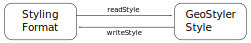

My awesome title
Author, Company
Author 2, Company
FOSS4G 2021, Buenos Aires, Argentina
Author Name

- Some info
- Some other info
- Some other info
Contents
- Content 1
- Content 2
- Content 3
Chapter one
- Item 1
- Item 2
Stacked images and badge
Press right arrow to see changing content


Title
subtitle, image below

Title
subtitle, image and split code below
Demo Style
Demo Style
Demo Style
Rule 1
circle
{
"name": "Demo Style",
"rules": [
{
"name": "Rule 1",
"symbolizers": [
{
"kind": "Mark",
"wellKnownName": "circle"
}
]
}
]
}
Chapter Title
Text left, image right
Text
some content, image rightText left, image right
Stacked
Right arrow to change contentSome
other contentAgain
Other content
Code
Can also be shown
LAYER
NAME "point_simple_point"
TYPE POINT
DATA "../shapes/points.shp"
EXTENT -180 -90 180 90
METADATA
"wms_title" "point_simple_point"
"wms_srs" "EPSG:4326"
END
CLASS
STYLE
SYMBOL "circle"
COLOR 0 255 0
SIZE 15
END
END
END
Centered Content, Stacked
Video Content
Text with logo & website

Thank you for your attention
and enjoy FOSS4G 2021
Imprint
Authors
Author 1
terrestris GmbH & Co. KG
Kölnstr. 99, 53111 Bonn
Germany
foo@terrestris.de
terrestris GmbH & Co. KG
Kölnstr. 99, 53111 Bonn
Germany
foo@terrestris.de
Author 2
terrestris GmbH & Co. KG
Kölnstr. 99, 53111 Bonn
Germany
bar@terrestris.de
terrestris GmbH & Co. KG
Kölnstr. 99, 53111 Bonn
Germany
bar@terrestris.de
License
Slides are published under CC BY-SA
license.
https://readable/link/to/slides/
PDF-Version,
git repository